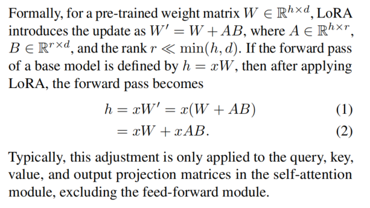

S-LORA: SERVING THOUSANDS OF CONCURRENT LORA ADAPTERS
UCB，Standford团队，比如vLLM团队中的Ying Sheng和Ion Stoica
背景
LoRA
One of the key innovations in the LoRA paper was the elimination of adapter inference latency by directly merging the adapter with the model parameters
一个model可以利用多个LoRA adapters来进行不同的推理

Serving Large Language Models
- Background
- Orca: iteration-level scheduling
- vLLM: PagedAttention
- model parallelism
- tensor
- sequence
- pipeline
- and their combinations
先前工作存在的问题
- 想要使用不同的LoRA推理，需要通过对于base model 进行add or subtract LoRA权重操作，降低了服务的吞吐率，也增加了总延迟
- 并没有考虑利用main memory来增加托管的Adapter数量的机会
创新点
- Unified Paging
- 通过统一分页机制来管理adapter的权重和KV cache
- Heterogeneous Batching
- 高度优化的在非连续内存上的CUDA kernel，可以促进LoRA的高效批处理
- S-LoRA TP
- 定制了一个Tensor Parallelism机制，最小化add LoRA weight的延迟
- 在小tensor上进行调度通信，大tensor和base model一起进行通信
难点
- 如何在使用多种LoRA Adapter的情况进行batching
- 需要有效的内存管理
- Adapter的rank不一样，占的内存大小不一；req的kv cache也需要动态进行分配和释放。所以可能会有很多内存碎片和I/O开销。
- 如何在非连续内存中进行不同rank的adapters的分离计算
- 需要重写kernel函数
- 多GPU机器上也需要新的并行策略
解决方案
4 BATCHING AND SCHEDULING
Batching
过去处理LoRA Adapter的发展：
- 直接将adapter merge到base model里面
- 不适合多adapter背景
- 动态的add和subtract LoRA weights
- 只能够进行单个adapter计算
本文提出了实时进行$xAB$计算的方法
- 会带来计算AB的额外开销
- 但批处理也会带来额外的节省
- 节省>开销
实现中遇到的问题：
- 使用BLAS 库中的GEMM kernel实现这一机制会因为 seq的长度和adapter的rank的异质性 而造成需要padding进行计算，硬件利用率较差
实现：
- 采用了自定义的CUDA kernel来将进行$xAB$计算
- 将LoRA Adapter先存到CPU主存上，然后需要使用的时候再移动到GPU中
- 采用了Orca的迭代级调度策略
Adapter Clustering
为了提高batching efficiency，一个潜在的策略是
- 减少active adapters在running batch中的数量，就可以有更多空间用于KV cache
- 更多的KV cache会可以有更大的batch size，且在一般情况下，decoding阶段中GPU内存并没有被充分利用，会有更高的吞吐量
[fixme] 这里并不一定噢！
为了减少activate adapter
- 对使用相同的adapter的req进行优先级排序，同一个adapter的就称为一个adapter clustering
- 但这可能会损害adapter之间的平均延迟和公平性，在附录A提供了消融实验！
Admission Control
实现一个早期的准入机制，估计可以在SLO中可以服务的adapter clusters，然后再按到达时间送达。
5 MEMORY MANAGEMENT
存在两个问题
- 动态性造成的内存碎片
- 动态加载到GPU上的Latency
提出了
- 统一分页机制，把vLLM的移过来
- 预取Adapter使得通信和计算重叠
动态预测下一个批处理需要的Adapter，提前移动到GPU上，减少了为了swap adapter的I/O时间
- 针对于非连续内存分布的自定义CUDA计算内核
- Triton实现的版本
- 早期Punica实现的版本
6 TENSOR PARALLELISM
实现了新的张量并行方法
to be continue
总结概括
- 动态换入换出lora adapter来实现base model的复用
- 包含了KV cache和Adapter weights的统一分页机制